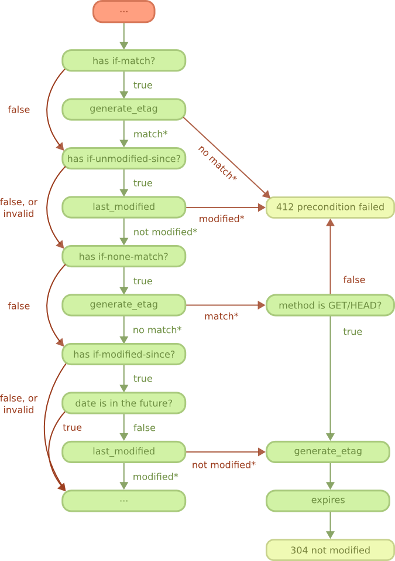

REST flowcharts
This chapter will explain the REST handler state machine through a number of different diagrams.
There are four main paths that requests may follow. One for the method OPTIONS; one for the methods GET and HEAD; one for the methods PUT, POST and PATCH; and one for the method DELETE.
All paths start with the "Start" diagram, and all paths excluding the OPTIONS path go through the "Content negotiation" diagram and optionally the "Conditional requests" diagram if the resource exists.
The red squares refer to another diagram. The light green squares indicate a response. Other squares may be either a callback or a question answered by Cowboy itself. Green arrows tend to indicate the default behavior if the callback is undefined.
Start
All requests start from here.
A series of callbacks are called in succession to perform a general checkup of the service, the request line and request headers.
The request body, if any, is not expected to have been received for any of these steps. It is only processed at the end of the "PUT, POST and PATCH methods" diagram, when all conditions have been met.
The known_methods and allowed_methods callbacks return a list of methods. Cowboy then checks if the request method is in the list, and stops otherwise.
The is_authorized callback may be used to check that access to the resource is authorized. Authentication may also be performed as needed. When authorization is denied, the return value from the callback must include a challenge applicable to the requested resource, which will be sent back to the client in the www-authenticate header.
This diagram is immediately followed by either the "OPTIONS method" diagram when the request method is OPTIONS, or the "Content negotiation" diagram otherwise.
OPTIONS method
This diagram only applies to OPTIONS requests.

The options callback may be used to add information about the resource, such as media types or languages provided; allowed methods; any extra information. A response body may also be set, although clients should not be expected to read it.
If the options callback is not defined, Cowboy will send a response containing the list of allowed methods by default.
Content negotiation
This diagram applies to all request methods other than OPTIONS. It is executed right after the "Start" diagram is completed.

The purpose of these steps is to determine an appropriate representation to be sent back to the client.
The request may contain any of the accept header; the accept-language header; or the accept-charset header. When present, Cowboy will parse the headers and then call the corresponding callback to obtain the list of provided content-type, language or charset for this resource. It then automatically select the best match based on the request.
If a callback is not defined, Cowboy will select the content-type, language or charset that the client prefers.
The content_types_provided also returns the name of a callback for every content-type it accepts. This callback will only be called at the end of the "GET and HEAD methods" diagram, when all conditions have been met.
The selected content-type, language and charset are saved as meta values in the Req object. You should use the appropriate representation if you set a response body manually (alongside an error code, for example).
This diagram is immediately followed by the "GET and HEAD methods" diagram, the "PUT, POST and PATCH methods" diagram, or the "DELETE method" diagram, depending on the method.
GET and HEAD methods
This diagram only applies to GET and HEAD requests.
For a description of the cond step, please see the "Conditional requests" diagram.
When the resource exists, and the conditional steps succeed, the resource can be retrieved.
Cowboy prepares the response by first retrieving metadata about the representation, then by calling the ProvideResource callback. This is the callback you defined for each content-types you returned from content_types_provided. This callback returns the body that will be sent back to the client, or a fun if the body must be streamed.
When the resource does not exist, Cowboy will figure out whether the resource existed previously, and if so whether it was moved elsewhere in order to redirect the client to the new URI.
The moved_permanently and moved_temporarily callbacks must return the new location of the resource if it was in fact moved.
PUT, POST and PATCH methods
This diagram only applies to PUT, POST and PATCH requests.
For a description of the cond step, please see the "Conditional requests" diagram.
When the resource exists, first the conditional steps are executed. When that succeeds, and the method is PUT, Cowboy will call the is_conflict callback. This function can be used to prevent potential race conditions, by locking the resource for example.
Then all three methods reach the content_types_accepted step that we will describe in a few paragraphs.
When the resource does not exist, and the method is PUT, Cowboy will check for conflicts and then move on to the content_types_accepted step. For other methods, Cowboy will figure out whether the resource existed previously, and if so whether it was moved elsewhere. If the resource is truly non-existent, the method is POST and the call for allow_missing_post returns true, then Cowboy will move on to the content_types_accepted step. Otherwise the request processing ends there.
The moved_permanently and moved_temporarily callbacks must return the new location of the resource if it was in fact moved.
The content_types_accepted returns a list of content-types it accepts, but also the name of a callback for each of them. Cowboy will select the appropriate callback for processing the request body and call it.
This callback may return one of three different return values.
If an error occurred while processing the request body, it must return false and Cowboy will send an appropriate error response.
If the method is POST, then you may return true with an URI of where the resource has been created. This is especially useful for writing handlers for collections.
Otherwise, return true to indicate success. Cowboy will select the appropriate response to be sent depending on whether a resource has been created, rather than modified, and on the availability of a location header or a body in the response.
DELETE method
This diagram only applies to DELETE requests.
For a description of the cond step, please see the "Conditional requests" diagram.

When the resource exists, and the conditional steps succeed, the resource can be deleted.
Deleting the resource is a two steps process. First the callback delete_resource is executed. Use this callback to delete the resource.
Because the resource may be cached, you must also delete all cached representations of this resource in the system. This operation may take a while though, so you may return before it finished.
Cowboy will then call the delete_completed callback. If you know that the resource has been completely deleted from your system, including from caches, then you can return true. If any doubts persist, return false. Cowboy will assume true by default.
To finish, Cowboy checks if you set a response body, and depending on that, sends the appropriate response.
When the resource does not exist, Cowboy will figure out whether the resource existed previously, and if so whether it was moved elsewhere in order to redirect the client to the new URI.
The moved_permanently and moved_temporarily callbacks must return the new location of the resource if it was in fact moved.
Conditional requests
This diagram applies to all request methods other than OPTIONS. It is executed right after the resource_exists callback, when the resource exists.

A request becomes conditional when it includes either of the if-match header; the if-unmodified-since header; the if-none-match header; or the if-modified-since header.
If the condition fails, the request ends immediately without any retrieval or modification of the resource.
The generate_etag and last_modified are called as needed. Cowboy will only call them once and then cache the results for subsequent use.